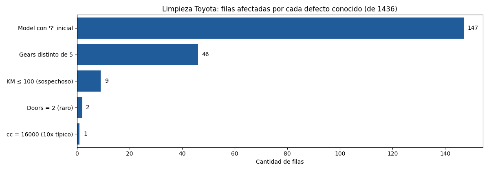
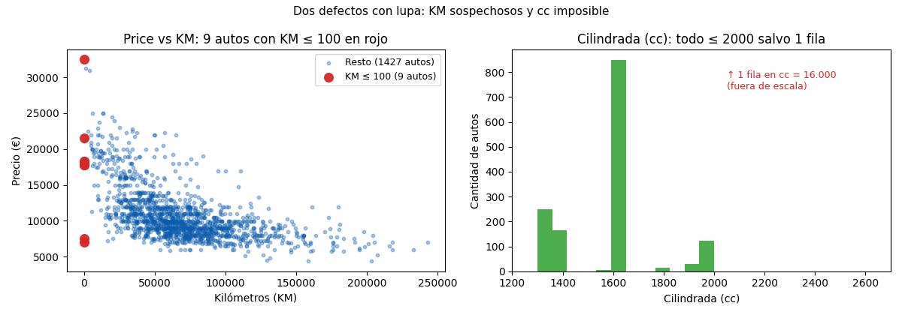

Unidad 2 · Exploración de datos · Lección 0004
Limpieza de datos con Toyota: detectar la suciedad
Win de hoy: auditar ToyotaCorolla.csv (1436 × 37) y documentar
sus 5 defectos conocidos: Model con ?, KM sospechosos y rarezas
en cc/Doors/Gears, con un snippet que los cuenta.
1 · Limpiar: el trabajo invisible que sostiene todo
Limpiar es revisar la tabla antes de creerle: buscar celdas vacías, errores de carga, formatos mezclados y valores imposibles. Dicen que es el 80 % del trabajo real, y se entiende con una regla vieja de computación: GIGO, “basura entra, basura sale”. Ningún modelo, por sofisticado que sea, se salva de datos sucios.
Dos palabras que vamos a usar mucho:
- Valor nulo.
La celda vacía: el dato no está. En pandas se marca como
NaN(not a number). Ojo: un?pegado a un texto o un1donde debería haber 60.000 no son nulos para pandas: son suciedad codificada, que es peor, porque el programa no la ve venir. - Valor atípico.
Un dato que se aleja mucho del resto. Algunos son errores (
cc = 16000), otros son casos reales pero raros (un Corolla de 32.500 €). La limpieza los detecta y documenta; decidir qué hacer con ellos (corregir, marcar, excluir) es una decisión que se anota, nunca se esconde.
Paso −1: ¿de dónde vienen? Los datos privados (los de una concesionaria real: clientes, patentes) exigen cuidados de seguridad y privacidad antes de abrirlos; los datos públicos (organismos, portales abiertos, Our World in Data) vienen con documentación y licencia. Este CSV es público y docente: ideal para aprender, pero igual hereda sesgos de cómo se juntó (ver lección 0038).
2 · Paso 0: ¿hay celdas vacías? (info, describe, isna)
Antes de cazar defectos sutiles, la pregunta más básica: ¿falta algo? Tres comandos responden:
import pandas as pd
df = pd.read_csv("../ToyotaCorolla.csv") # desde lessons/
print(df.shape) # (1436, 37)
print(df.isna().sum().sum()) # 0 → ni una celda vacía
print(df.info()) # 35 numéricas + 2 de texto (Model, Fuel_Type)Resultado: 0 valores nulos en todo el archivo. ¿Terminamos? No: como advierte el
diccionario Toyota, acá la suciedad viene
codificada dentro de celdas llenas. El isna() no la detecta; hay que mirar columna por columna.
Por eso esta unidad existe: describe() muestra el resumen numérico, pero el juicio lo pone el analista.
3 · Caso 1: Model con ? inicial (147 filas)
La columna Model describe la versión del auto en texto. Pero 147 filas empiezan con un signo
de pregunta pegado, defecto típico de carga del archivo original:
raro = df["Model"].str.startswith("?", na=False)
print(raro.sum()) # 147
print(df.loc[raro, "Model"].iloc[0])
# ?TOYOTA Corolla 2.0 D4D HATCHB TERRA 2/3-Doors¿Es grave? Para contar modelos distintos sí: "?TOYOTA …" y "TOYOTA …" son el mismo
auto escrito distinto, y pandas los cuenta como dos. La decisión documentada:
- Crear
Model_tiene_pregunta(flag 0/1): no perdemos la información de que esa fila venía rota. - Crear
Model_limpiosin el?para agrupar y contar bien.
df["Model_tiene_pregunta"] = raro.astype(int)
df["Model_limpio"] = df["Model"].str.lstrip("?")4 · Caso 2: KM ≤ 100 (9 autos, 8 con KM = 1)
¿Un auto usado con 1 kilómetro? Hay 9 filas con KM ≤ 100. Acá viene la lección importante:
el contexto decide si es error o no. Mirá la tabla completa de los 9:
| Fila | Price (€) | KM | Edad (meses) | Combustible | Lectura |
|---|---|---|---|---|---|
| 184/185 | 17.795 / 18.245 | 1 | 1 | Petrol | De 1 mes: casi nuevo, KM=1 es creíble |
| 109 | 32.500 | 1 | 4 | Diesel | De 4 meses y carísimo: creíble |
| 117/169/170/183 | 17–21 mil | 1–15 | 2–9 | Petrol | Jóvenes y caros: creíbles |
| 601 | 7.500 | 1 | 50 | Diesel | De 50 meses: error casi seguro |
| 1435 | 6.950 | 1 | 76 | Petrol | De 76 meses: error casi seguro |
Siete son autos jóvenes y caros donde KM = 1 puede significar “sin rodar” (un código del vendedor,
no una medición). Pero las filas 601 y 1435 tienen 4 y 6 años con 1 km: eso es un error de carga.
Decisión documentada: flag KM_sospechoso en los 9, y en el análisis de KM mirar los
resultados con y sin ellos. Borrarlos sin más sería esconder evidencia.
df["KM_sospechoso"] = (df["KM"] <= 100).astype(int)
print(df["KM_sospechoso"].sum()) # 95 · Caso 3: rarezas en cc, Doors y Gears
cc = 16000(1 fila). Toda la columna está entre 1300 y 2000… salvo una fila con 16.000, exactamente 10× lo típico. Casi seguro alguien sumó un cero. Decisión: corregir a 1600 (el valor más común) y anotarlo, o marcarla; lo imperdonable es dejarla pasar en silencio porque distorsiona cualquier promedio.Doors = 2(2 filas). El resto: 622 con 3, 138 con 4, 674 con 5. ¿Existe un Corolla de 2 puertas? Raro pero no imposible; se marca con flag y se sigue. Ejemplo perfecto de “atípico ≠ error”.Gears ≠ 5(46 filas). 1390 autos tienen 5 marchas; hay 43 con 6 (plausible en versiones deportivas), 2 con 3 y 1 con 4 (sospechosos). Se marcan; el modelo dirá si importan.
Y un hallazgo de regalo: hay columnas casi constantes
(Cylinders vale 4 en las 1436 filas, Guarantee_Period vale 3 en 1274).
Si una columna no varía, no puede explicar nada: el análisis de ejemplo las deja afuera, y en la
Unidad 5 veremos cómo la selección de variables las descarta sola.
6 · Figuras: el mapa de la suciedad
Primero, el conteo de filas afectadas por cada defecto (de 1436):

? de
Model (147) es el único que supera el 10 %; el resto son puñados de filas que igual
hay que documentar.Y con lupa, los dos casos numéricos: los 9 KM ≤ 100 en rojo sobre la nube
Price vs KM, y el histograma de cc donde todo vive bajo 2000 salvo la fila imposible:

KM ≤ 100 (rojo) pegados al eje.
Derecha: cc concentrada entre 1300 y 2000, con 1 fila en 16.000 fuera de escala.Snippet generador de la Fig. 1 (conteo honesto, sin hardcodear):
import pandas as pd
df = pd.read_csv("../ToyotaCorolla.csv")
print("Model con ?:", int(df["Model"].str.startswith("?", na=False).sum())) # 147
print("Gears != 5:", int((df["Gears"] != 5).sum())) # 46
print("KM <= 100:", int((df["KM"] <= 100).sum())) # 9
print("Doors == 2:", int((df["Doors"] == 2).sum())) # 2
print("cc > 5000:", int((df["cc"] > 5000).sum())) # 1Regenerar ambas figuras (mismo resultado versionado en assets/img/toyota/):
python scripts/make_figures.py --only limpieza-datos-toyota7 · Quiz (auto-chequeo inmediato)
8 · Fuente primaria y cierre
Para profundizar (1 fuente):
McKinney, Python for Data Analysis — capítulos de limpieza, valores faltantes y
value_counts
(wesmckinney.com/book, también en
RESOURCES.md del curso).
Es la referencia para todo lo que hoy contaste con isna y comparaciones booleanas.
¿Algo no quedó claro? Preguntame al agente: qué defecto te cuesta detectar, cuándo un atípico es error y cuándo es real, o cómo decidir entre corregir, marcar o excluir. Esa pregunta vale más que releer.